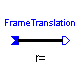
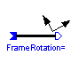
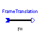
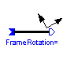
 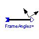
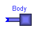
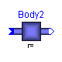
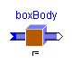
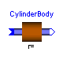
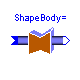
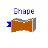
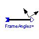
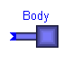
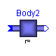
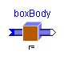
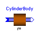
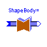
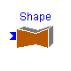
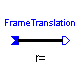
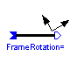
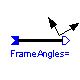
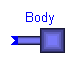
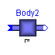
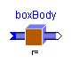
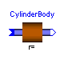
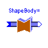
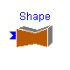
This package contains the inertial system and elements which have mass and inertia.
Release Notes:
Copyright (C) 2000, DLR.
The Modelica package is free software; it can be redistributed and/or modified under the terms of the Modelica license, see the license conditions and the accompanying disclaimer in the documentation of package Modelica in file "Modelica/package.mo".
ModelicaAdditions.MultiBody.Parts.InertialSystem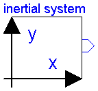
An instance of this class defines a coordinate system: the inertial frame. All parameter vectors and tensors (e.g. position vectors) are given in the home position of the multibody system with respect to the inertial frame. One instance of class InertialSystem MUST always be present for every multibody model. In order to identify the desired axes of the used inertial frame in the icon, the labels of the two axes can be defined as string parameters.
| Name | Default | Description |
|---|---|---|
| g | 9.81 | Gravity constant [m/s2] |
| ng[3] | {0,-1,0} | Direction of gravity (gravity = g*ng) |
| label1 | "x" | Label of horizontal axis in icon |
| label2 | "y" | Label of vertical axis in icon |
model InertialSystem "Inertial system"
parameter SIunits.Acceleration g=9.81 "Gravity constant";
parameter Real ng[3]={0,-1,0}
"Direction of gravity (gravity = g*ng)";
parameter String label1="x"
"Label of horizontal axis in icon";
parameter String label2="y"
"Label of vertical axis in icon";
SIunits.Acceleration gravity[3] "Gravity acceleration vector";
MultiBody.Interfaces.Frame_b frame_b;
equation
gravity = g*ng;
/*Equations*/
frame_b.S = identity(3);
frame_b.r0 = zeros(3);
frame_b.v = zeros(3);
frame_b.w = zeros(3);
frame_b.a = -gravity;
frame_b.z = zeros(3);
end InertialSystem;
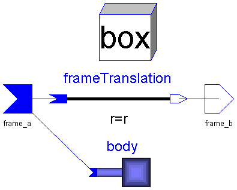
Rigid body with box shape. The mass properties of the body are computed
from the box data. Optionally, the box may be hollow.
The (outer) box shape is automatically used in animation.
Parameter vectors are defined with respect to frame_a in [m].
Parameters:
r(3) : Position vector from the origin of frame_a to the
origin of frame_b.
r0(3) : Position vector from frame_a to the mid-point of the left
box plane.
LengthDirection(3): Unit vector in direction of length (will be normalized).
WidthDirection(3) : Unit vector in direction of width (will be normalized).
Length : Length of box in [m].
Width : Width of box in [m].
Height : Height of box in direction of a vector which is
orthogonal to LengthDirection and WidthDirection in [m].
InnerWidth : Width of inner box surface in [m] (0 <= InnerWidth < Width).
InnerHeight: Height of inner box surface in [m] (0 <= InnerHeight < Height).
rho : Density of material in [g/cm^3], e.g.
steel: 7.7 .. 7.9
wood : 0.4 .. 0.8
Material(4): = [r g b specular].
Color and specular coefficient of the box.
[r,g,b] affects the color of diffuse and ambient reflected
light. Specular is a coefficient defining white specular
reflection. What color that is reflected also depends on the
color of the light sources. Note, r g, b and specular are
given in the range 0-1. Specular=1 gives a metallic appearance.
| Name | Default | Description |
|---|---|---|
| r[3] | {0.1,0,0} | Vector from frame_a to frame_b, resolved in frame_a [m] |
| r0[3] | {0,0,0} | Vector from frame_a to left box plane, resolved in frame_a [m] |
| LengthDirection[3] | r - r0 | Vector in length direction, resolved in frame_a [m] |
| WidthDirection[3] | {0,1,0} | Vector in width direction, resolved in frame_a [m] |
| Length | (sqrt((r - r0)*(r - r0))) | Length of box [m] |
| Width | 0.1 | Width of box [m] |
| Height | 0.1 | Height of box [m] |
| InnerWidth | 0 | Width of inner box surface [m] |
| InnerHeight | 0 | Height of inner box surface [m] |
| rho | 7.7 | Density of box material [g/cm^3] |
| Material[4] | {1,0,0,0.5} | Color and specular coefficient |
model BoxBody "Rigid body with box shape (also used for animation)"
extends MultiBody.Interfaces.TwoTreeFrames;
parameter SIunits.Position r[3]={0.1,0,0}
"Vector from frame_a to frame_b, resolved in frame_a";
parameter SIunits.Position r0[3]={0,0,0}
"Vector from frame_a to left box plane, resolved in frame_a";
parameter SIunits.Position LengthDirection[3]=r - r0
"Vector in length direction, resolved in frame_a";
parameter SIunits.Position WidthDirection[3]={0,1,0}
"Vector in width direction, resolved in frame_a";
parameter SIunits.Length Length=(sqrt((r - r0)*(r - r0)))
"Length of box";
parameter SIunits.Length Width=0.1 "Width of box";
parameter SIunits.Length Height=0.1 "Height of box";
parameter SIunits.Length InnerWidth=0 "Width of inner box surface"
;
parameter SIunits.Length InnerHeight=0
"Height of inner box surface";
parameter Real rho=7.7 "Density of box material [g/cm^3]";
parameter Real Material[4]={1,0,0,0.5}
"Color and specular coefficient";
SIunits.Mass mo;
SIunits.Mass mi;
Real Sbox[3, 3];
SIunits.Length l;
SIunits.Length w;
SIunits.Length h;
SIunits.Length wi;
SIunits.Length hi;
FrameTranslation frameTranslation(r=r);
MultiBody.Interfaces.BodyBase body;
VisualShape box(
Shape="box",
r0=r0,
LengthDirection=LengthDirection,
WidthDirection=WidthDirection,
Length=Length,
Width=Width,
Height=Height,
Material=Material);
equation
connect(body.frame_a, frame_a);
connect(frame_a, frameTranslation.frame_a);
connect(frameTranslation.frame_b, frame_b);
box.S = Sa;
box.r = r0a;
box.Sshape = Sbox;
l = Length;
w = Width;
h = Height;
wi = InnerWidth;
hi = InnerHeight;
/*Mass properties of box*/
mo = 1000*rho*l*w*h;
mi = 1000*rho*l*wi*hi;
body.m = mo - mi;
body.rCM = r0 + l/2*box.nLength;
body.I = Sbox*diagonal({mo*(w*w + h*h) - mi*(wi*wi + hi*hi),mo*(l*l + h*h)
- mi*(l*l + hi*hi),mo*(l*l + w*w) - mi*(l*l + wi*wi)}/12)*transpose(Sbox);
end BoxBody;

Fixed translation of frame_b with respect to frame_a, i.e.,
the frames of connectors a and b are parallel to each other.
Parameters:
r: Position vector from the origin of (connector) frame_a to the origin of
(connector) frame_b, resolved in frame_a in [m].
| Name | Default | Description |
|---|---|---|
| r[3] | {0,0,0} | Vector from frame_a to frame_b resolved in frame_a [m] |
model FrameTranslation
"Fixed translation of frame_b with respect to frame_a"
extends MultiBody.Interfaces.TwoTreeFrames;
parameter SIunits.Position r[3]={0,0,0}
"Vector from frame_a to frame_b resolved in frame_a";
protected
SIunits.Velocity vaux[3];
equation
Sb = Sa;
wb = wa;
zb = za;
r0b = r0a + Sa*r;
vaux = cross(wa, r);
vb = va + vaux;
ab = aa + cross(za, r) + cross(wa, vaux);
/*Transform the force and torque acting at frame_b to frame_a*/
fa = fb;
ta = tb + cross(r, fa);
end FrameTranslation;
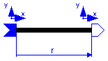
| Name | Default | Description |
|---|---|---|
| r[3] | {0,0,0} | Vector from frame_a to frame_b resolved in frame_a [m] |
| n[3] | {1,0,0} | Axis of rotation in frame_a and in frame_b |
| angle | 0 | Rotation angle in [deg] |
| label1 | "x" | Label of horizontal axis in icon |
| label2 | "y" | Label of vertical axis in icon |
model FrameRotation
"Fixed translation and planar rotation of frame_b with respect to frame_a"
extends MultiBody.Interfaces.FrameBase;
parameter Real n[3]={1,0,0}
"Axis of rotation in frame_a and in frame_b";
parameter Real angle=0 "Rotation angle in [deg]";
parameter String label1="x"
"Label of horizontal axis in icon";
parameter String label2="y"
"Label of vertical axis in icon";
protected
Real nn[3];
SIunits.Angle angleRad;
constant Real pi=Modelica.Constants.pi;
equation
nn = n/sqrt(n*n);
angleRad = angle*pi/180;
S_rel = MultiBody.Interfaces.planarRotation(nn, angleRad);
end FrameRotation;
ModelicaAdditions.MultiBody.Parts.FrameAxes

| Name | Default | Description |
|---|---|---|
| r[3] | {0,0,0} | Vector from frame_a to frame_b resolved in frame_a [m] |
| nx[3] | {1,0,0} | x-axis of frame_b resolved in frame_a |
| ny[3] | {0,1,0} | y-axis of frame_b resolved in frame_a |
| label1 | "x" | Label of horizontal axis in icon |
| label2 | "y" | Label of vertical axis in icon |
model FrameAxes
"Fixed translation and rotation of frame_b with respect to frame_a"
extends MultiBody.Interfaces.FrameBase;
parameter Real nx[3]={1,0,0}
"x-axis of frame_b resolved in frame_a";
parameter Real ny[3]={0,1,0}
"y-axis of frame_b resolved in frame_a";
parameter String label1="x"
"Label of horizontal axis in icon";
parameter String label2="y"
"Label of vertical axis in icon";
protected
Real nz[3];
Real nnx[3];
Real nny[3];
Real nnz[3];
equation
nz = cross(nx, ny);
nnz = nz/sqrt(nz*nz);
nnx = nx/sqrt(nx*nx);
nny = cross(nnz, nnx);
S_rel = transpose([nnx, nny, nnz]);
end FrameAxes;
| Name | Default | Description |
|---|---|---|
| r[3] | {0,0,0} | Vector from frame_a to frame_b resolved in frame_a [m] |
| sequence[3] | {1,2,3} | Sequence of rotations |
| angles[3] | {0,0,0} | Rotation angles around axes defined in sequence in [deg] |
| label1 | "x" | Label of horizontal axis in icon |
| label2 | "y" | Label of vertical axis in icon |
model FrameAngles
"Fixed translation and elementary rotations of frame_b with respect to frame_a"
extends MultiBody.Interfaces.FrameBase;
parameter Integer sequence[3](
min={1,1,1},
max={3,3,3}) = {1,2,3} "Sequence of rotations";
parameter Real angles[3]={0,0,0}
"Rotation angles around axes defined in sequence in [deg]";
parameter String label1="x"
"Label of horizontal axis in icon";
parameter String label2="y"
"Label of vertical axis in icon";
protected
parameter SIunits.Angle anglesRad[3]=angles*Modelica.Constants.pi/180.;
equation
S_rel = MultiBody.Interfaces.axisRotation(sequence[3], anglesRad[3])*
MultiBody.Interfaces.axisRotation(sequence[2], anglesRad[2])*
MultiBody.Interfaces.axisRotation(sequence[1], anglesRad[1]);
end FrameAngles;
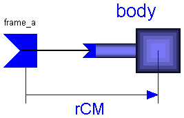
Rigid body with one cut. All the mass and inertia properties must be
supplied with respect to the center of mass.
Parameters:
rCM(3): Position vector from the origin of frame_a to the center of
mass, resolved in frame_a in [m].
m : Mass of body in [kg].
Ixy : Elements (x,y) of the inertia tensor of the body with respect to
the center of mass, resolved in frame_a in [kgm^2].
The following elements can be defined:
I11, I22, I33, I21, I31, I32.
(Move the inertial from into the center of mass by translation
and resolve the inertia tensor in this frame).
| Name | Default | Description |
|---|---|---|
| rCM[3] | {0,0,0} | Vector from frame_a to center of mass, resolved in frame_a [m] |
| m | 0 | Mass of body [kg] [kg] |
| I11 | 0 | (1,1) element of inertia tensor [kg.m2] |
| I22 | 0 | (2,2) element of inertia tensor [kg.m2] |
| I33 | 0 | (3,3) element of inertia tensor [kg.m2] |
| I21 | 0 | (2,1) element of inertia tensor [kg.m2] |
| I31 | 0 | (3,1) element of inertia tensor [kg.m2] |
| I32 | 0 | (3,2) element of inertia tensor [kg.m2] |
model Body "Rigid body with one cut"
extends MultiBody.Interfaces.OneFrame_a;
parameter SIunits.Position rCM[3]={0,0,0}
"Vector from frame_a to center of mass, resolved in frame_a";
parameter SIunits.Mass m=0 "Mass of body [kg]";
parameter SIunits.Inertia I11=0 "(1,1) element of inertia tensor";
parameter SIunits.Inertia I22=0 "(2,2) element of inertia tensor";
parameter SIunits.Inertia I33=0 "(3,3) element of inertia tensor";
parameter SIunits.Inertia I21=0 "(2,1) element of inertia tensor";
parameter SIunits.Inertia I31=0 "(3,1) element of inertia tensor";
parameter SIunits.Inertia I32=0 "(3,2) element of inertia tensor";
MultiBody.Interfaces.BodyBase body;
equation
connect(frame_a, body.frame_a);
body.m = m;
body.rCM = rCM;
body.I = [I11, I21, I31; I21, I22, I32; I31, I32, I33];
end Body;
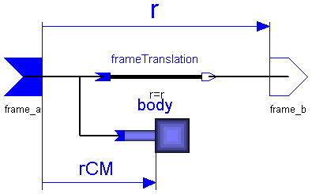
Rigid body with two frames. All the mass and inertia properties must be
supplied with respect to the center of mass. All parameter vectors
have to be resolved in frame_a in [m].
Parameters:
r(3) : Position vector from the origin of frame_a to the origin of
frame_b.
rCM(3): Position vector from the origin of frame_a to the center of
mass.
m : Mass of body in [kg].
Ixy : Elements (x,y) of the inertia tensor of the body with respect to
the center of mass, resolved frame_a in [kgm^2].
The following elements can be defined:
I11, I22, I33, I21, I31, I32.
(Move the inertial from into the center of mass by translation
and resolve the inertia tensor in this frame).
| Name | Default | Description |
|---|---|---|
| r[3] | {0,0,0} | Vector from frame_a to frame_b, resolved in frame_a [m] |
| rCM[3] | {0,0,0} | Vector from frame_a to center of mass, resolved in frame_a [m] |
| m | 0 | Mass of body [kg] |
| I11 | 0 | (1,1) element of inertia tensor [kg.m2] |
| I22 | 0 | (2,2) element of inertia tensor [kg.m2] |
| I33 | 0 | (3,3) element of inertia tensor [kg.m2] |
| I21 | 0 | (2,1) element of inertia tensor [kg.m2] |
| I31 | 0 | (3,1) element of inertia tensor [kg.m2] |
| I32 | 0 | (3,2) element of inertia tensor [kg.m2] |
model Body2 "Rigid body with two cuts"
extends MultiBody.Interfaces.TwoTreeFrames;
parameter SIunits.Position r[3]={0,0,0}
"Vector from frame_a to frame_b, resolved in frame_a";
parameter SIunits.Position rCM[3]={0,0,0}
"Vector from frame_a to center of mass, resolved in frame_a";
parameter SIunits.Mass m=0 "Mass of body";
parameter SIunits.Inertia I11=0 "(1,1) element of inertia tensor";
parameter SIunits.Inertia I22=0 "(2,2) element of inertia tensor";
parameter SIunits.Inertia I33=0 "(3,3) element of inertia tensor";
parameter SIunits.Inertia I21=0 "(2,1) element of inertia tensor";
parameter SIunits.Inertia I31=0 "(3,1) element of inertia tensor";
parameter SIunits.Inertia I32=0 "(3,2) element of inertia tensor";
FrameTranslation frameTranslation(r=r);
MultiBody.Interfaces.BodyBase body;
equation
connect(frame_a, frameTranslation.frame_a);
connect(frame_b, frameTranslation.frame_b);
connect(frame_a, body.frame_a);
body.m = m;
body.rCM = rCM;
body.I = [I11, I21, I31; I21, I22, I32; I31, I32, I33];
end Body2;
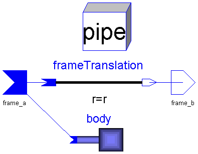
Rigid body with cylindrical shape. The mass properties of the body are
computed from the cylinder data. Optionally, the cylinder may be hollow.
The pipe shape is automatically used in animation.
Parameter vectors are defined with respect to frame_a in [m].
Parameters:
r(3) : Position vector from the origin of frame_a to the origin of
frame_b.
r0(3) : Position vector from the origin of frame_a to the center
of the left cylinder circle.
Axis(3) : Unit vector in direction of the cylinder axis
(will be normalized)
Length : Length of cylinder in [m].
Radius : Radius of cylinder in [m].
InnerRadius: Inner radius of cylinder in [m].
rho : Density of material in [g/cm^3], e.g.
steel: 7.7 .. 7.9
wood : 0.4 .. 0.8
Material(4): = [r g b specular].
Color and specular coefficient of the box.
[r,g,b] affects the color of diffuse and ambient reflected
light. Specular is a coefficient defining white specular
reflection. What color that is reflected also depends on the
color of the light sources. Note, r g, b and specular are
given in the range 0-1. Specular=1 gives a metallic appearance.
| Name | Default | Description |
|---|---|---|
| r[3] | {0.2,0,0} | Vector from frame_a to frame_b, resolved in frame_a [m] |
| r0[3] | {0,0,0} | Vector from frame_a to left circle center, resolved in frame_a [m] |
| Axis[3] | r - r0 | Vector in direction of cylinder axis, resolved in frame_a [m] |
| Length | (sqrt(Axis*Axis)) | Length of cylinder [m] |
| Radius | 0.1 | Radius of cylinder [m] |
| InnerRadius | 0 | Inner radius of cylinder [m] |
| rho | 7.7 | Density of material [g/cm^3] |
| Material[4] | {1,0,0,0.5} | Color and specular coefficient |
model CylinderBody
"Rigid body with cylindrical shape (also used for animation)"
extends MultiBody.Interfaces.TwoTreeFrames;
parameter SIunits.Position r[3]={0.2,0,0}
"Vector from frame_a to frame_b, resolved in frame_a";
parameter SIunits.Position r0[3]={0,0,0}
"Vector from frame_a to left circle center, resolved in frame_a";
parameter SIunits.Position Axis[3]=r - r0
"Vector in direction of cylinder axis, resolved in frame_a";
parameter SIunits.Length Length=(sqrt(Axis*Axis))
"Length of cylinder";
parameter SIunits.Length Radius=0.1 "Radius of cylinder";
parameter SIunits.Length InnerRadius=0 "Inner radius of cylinder";
parameter Real rho=7.7 "Density of material [g/cm^3]";
parameter Real Material[4]={1,0,0,0.5}
"Color and specular coefficient";
Real Scyl[3, 3];
SIunits.Mass mo;
SIunits.Mass mi;
SIunits.Inertia I22;
FrameTranslation frameTranslation(r=r);
MultiBody.Interfaces.BodyBase body;
VisualShape box(
r0=r0,
Length=Length,
Width=Radius,
Height=Radius,
LengthDirection=Axis,
WidthDirection={0,1,0},
Shape="pipe",
Material=Material,
Extra=InnerRadius);
equation
connect(frame_a, body.frame_a);
connect(frame_a, frameTranslation.frame_a);
connect(frameTranslation.frame_b, frame_b);
box.S = Sa;
box.r = r0a;
box.Sshape = Scyl;
/*Mass properties of cylinder*/
mo = 1000*rho*PI*Length*Radius*Radius;
mi = 1000*rho*PI*Length*InnerRadius*InnerRadius;
I22 = (mo*(Length*Length + 3*Radius*Radius) - mi*(Length*Length + 3*
InnerRadius*InnerRadius))/12;
body.m = mo - mi;
body.rCM = r0 + Length/2*box.nLength;
body.I = Scyl*diagonal({(mo*Radius*Radius - mi*InnerRadius*InnerRadius)/2,
I22,I22})*transpose(Scyl);
end CylinderBody;
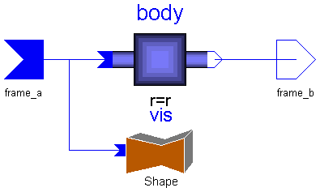
Rigid body with two cuts and an additional shape used in animation.
All the mass and inertia properties must be supplied with respect
to the center of mass. All parameter vectors are resolved in frame_a
in [m].
Parameters:
r(3) : Position vector from the origin of frame_a to the origin of
frame_b.
rCM(3) : Position vector from the origin of frame_a to the center of
mass.
m : Mass of body in [kg].
Ixy : Elements (x,y) of the inertia tensor of the body with respect to
the center of mass, resolved in the inertial frame in the home
position in [kgm^2]. The following elements can be defined:
I11, I22, I33, I21, I31, I32.
(Move the inertial from into the center of mass by translation
and resolve the inertia tensor in this frame).
Shape : Type of visual shape. Predefined shapes are
shape = box
sphere
cylinder
cone
pipe
beam
wirebox
External shapes are specified as DXF-files. Only external shape
names like 1 , 2 etc. are supported. The corresponding
definitions should be in files '1.dxf', '2.dxf' etc.
r0(3) : Position vector from the origin of frame_a to the origin
of the visual object.
LengthDirection(3): Unit vector in direction of length (will be normalized).
WidthDirection(3) : Unit vector in direction of width (will be normalized).
Length : Length of visual shape in [m].
Width : Width of visual shape in [m].
Height : Height of visual shape in direction of a vector which is
orthogonal to LengthDirection and WidthDirection .
Material(4) : = [r g b specular].
Color and specular coefficient of the shape.
[r,g,b] affects the color of diffuse and ambient reflected
light. Specular is a coefficient defining white specular
reflection. What color that is reflected also depends on the
color of the light sources. Note, r g, b and specular are
given in the range 0-1. Specular=1 gives a metallic appearance.
Extra : Additional parameter for cone and pipe.
| Name | Default | Description |
|---|---|---|
| r[3] | {0.1,0,0} | Vector from frame_a to frame_b, resolved in frame_a [m] |
| rCM[3] | {0,0,0} | Vector from frame_a to center of mass, resolved in frame_a [m] |
| m | 0 | Mass of body [kg] |
| I11 | 0 | (1,1) element of inertia tensor [kg.m2] |
| I22 | 0 | (2,2) element of inertia tensor [kg.m2] |
| I33 | 0 | (3,3) element of inertia tensor [kg.m2] |
| I21 | 0 | (2,1) element of inertia tensor [kg.m2] |
| I31 | 0 | (3,1) element of inertia tensor [kg.m2] |
| I32 | 0 | (3,2) element of inertia tensor [kg.m2] |
| Shape | "box" | Name of shape (see info text) |
| r0[3] | {0,0,0} | Vector from frame_a to shape origin. resolved in frame_a [m] |
| LengthDirection[3] | r - r0 | Vector in length direction, resolved in frame_a [m] |
| WidthDirection[3] | {0,1,0} | Vector in width direction, resolved in frame_a [m] |
| Length | (sqrt((r - r0)*(r - r0))) | Length of shape [m] |
| Width | 0.1 | Width of shape [m] |
| Height | 0.1 | Height of shape [m] |
| Material[4] | {1,0,0,0.5} | Color and specular coefficient |
| Extra | 0.0 | Additional parameter for cone and pipe |
model ShapeBody
"Rigid body with visual shape (also used for animation)"
extends MultiBody.Interfaces.TwoTreeFrames;
parameter SIunits.Position r[3]={0.1,0,0}
"Vector from frame_a to frame_b, resolved in frame_a";
parameter SIunits.Position rCM[3]={0,0,0}
"Vector from frame_a to center of mass, resolved in frame_a";
parameter SIunits.Mass m=0 "Mass of body";
parameter SIunits.Inertia I11=0 "(1,1) element of inertia tensor";
parameter SIunits.Inertia I22=0 "(2,2) element of inertia tensor";
parameter SIunits.Inertia I33=0 "(3,3) element of inertia tensor";
parameter SIunits.Inertia I21=0 "(2,1) element of inertia tensor";
parameter SIunits.Inertia I31=0 "(3,1) element of inertia tensor";
parameter SIunits.Inertia I32=0 "(3,2) element of inertia tensor";
parameter String Shape="box"
"Name of shape (see info text)";
parameter SIunits.Position r0[3]={0,0,0}
"Vector from frame_a to shape origin. resolved in frame_a";
parameter SIunits.Position LengthDirection[3]=r - r0
"Vector in length direction, resolved in frame_a";
parameter SIunits.Position WidthDirection[3]={0,1,0}
"Vector in width direction, resolved in frame_a";
parameter SIunits.Length Length=(sqrt((r - r0)*(r - r0)))
"Length of shape";
parameter SIunits.Length Width=0.1 "Width of shape";
parameter SIunits.Length Height=0.1 "Height of shape";
parameter Real Material[4]={1,0,0,0.5}
"Color and specular coefficient";
parameter Real Extra=0.0 "Additional parameter for cone and pipe";
Body2 body(
r=r,
rCM=rCM,
m=m,
I11=I11,
I22=I22,
I33=I33,
I21=I21,
I31=I31,
I32=I32);
MultiBody.Parts.Shape vis(
Shape=Shape,
r0=r0,
LengthDirection=LengthDirection,
WidthDirection=WidthDirection,
Length=Length,
Width=Width,
Height=Height,
Material=Material,
Extra=Extra);
equation
connect(frame_a, body.frame_a);
connect(frame_b, body.frame_b);
connect(vis.frame_a, frame_a);
end ShapeBody;
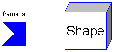
A variety of shapes can be defined for animation.
Parameter vectors are defined with respect frame_a in [m].
Parameters:
Shape : Type of visual shape. Predefined shapes are
shape = box
sphere
cylinder
cone
pipe
beam
wirebox
External shapes are specified as DXF-files. Only external shape
names like 1 , 2 etc. are supported. The corresponding
definitions should be in files '1.dxf', '2.dxf' etc.
r0(3) : Position vector from the origin of frame_a to the origin
of the visual object.
LengthDirection(3): Unit vector in direction of length (will be normalized).
WidthDirection(3) : Unit vector in direction of width (will be normalized).
Length : Length of visual shape in [m].
Width : Width of visual shape in [m].
Height : Height of visual shape in direction of a vector which is
orthogonal to LengthDirection and WidthDirection .
Material(4) : = [r g b specular].
Color and specular coefficient of the shape.
[r,g,b] affects the color of diffuse and ambient reflected
light. Specular is a coefficient defining white specular
reflection. What color that is reflected also depends on the
color of the light sources. Note, r g, b and specular are
given in the range 0-1. Specular=1 gives a metallic appearance.
Extra : Additional parameter for cone and pipe.
In the class, the unit vectors in direction of the shape axes are computed
and are provided as terminal variables to be used in the calling object:
nLength(3) : Unit vector in direction of AxisLength .
nWidth (3) : Unit vector orthogonal to nLength .
nHeight(3) : Unit vector orthogonal to nLength and nWidth.
| Name | Default | Description |
|---|---|---|
| Shape | "box" | Name of shape (see info text) |
| r0[3] | {0,0,0} | Vector from frame_a to shape origin [m] |
| LengthDirection[3] | {1,0,0} | Vector in length direction |
| WidthDirection[3] | {0,1,0} | Vector in width direction |
| Length | 1 | Length of shape [m] |
| Width | 0.1 | Width of shape [m] |
| Height | 0.1 | Height of shape [m] |
| Material[4] | {1,0,0,0.5} | Color and specular coefficient |
| Extra | 0.0 | Additional parameter for cone and pipe |
model Shape "General animation shape"
extends MultiBody.Interfaces.OneFrame_a;
parameter String Shape="box"
"Name of shape (see info text)";
parameter Real r0[3]={0,0,0}
"Vector from frame_a to shape origin [m]";
parameter Real LengthDirection[3]={1,0,0}
"Vector in length direction";
parameter Real WidthDirection[3]={0,1,0}
"Vector in width direction";
parameter Real Length=1 "Length of shape [m]";
parameter Real Width=0.1 "Width of shape [m]";
parameter Real Height=0.1 "Height of shape [m]";
parameter Real Material[4]={1,0,0,0.5}
"Color and specular coefficient";
parameter Real Extra=0.0 "Additional parameter for cone and pipe";
Real nLength[3];
Real nWidth[3];
Real nHeight[3];
VisualShape vis(
Shape=Shape,
r0=r0,
LengthDirection=LengthDirection,
WidthDirection=WidthDirection,
Length=Length,
Width=Width,
Height=Height,
Material=Material,
Extra=Extra);
equation
vis.S = Sa;
vis.r = r0a;
vis.nLength = nLength;
vis.nWidth = nWidth;
vis.nHeight = nHeight;
/*No forces and torques*/
fa = zeros(3);
ta = zeros(3);
end Shape;